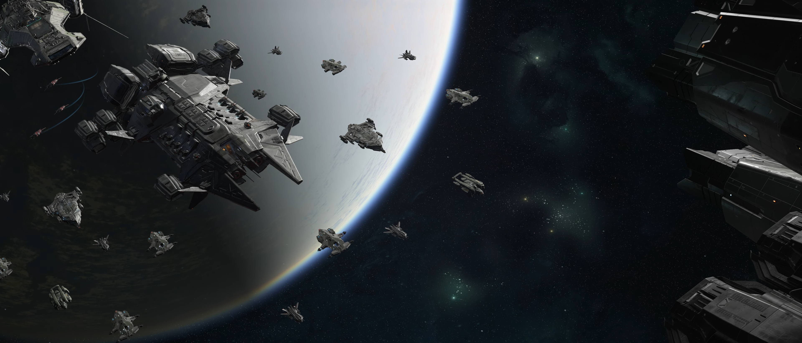
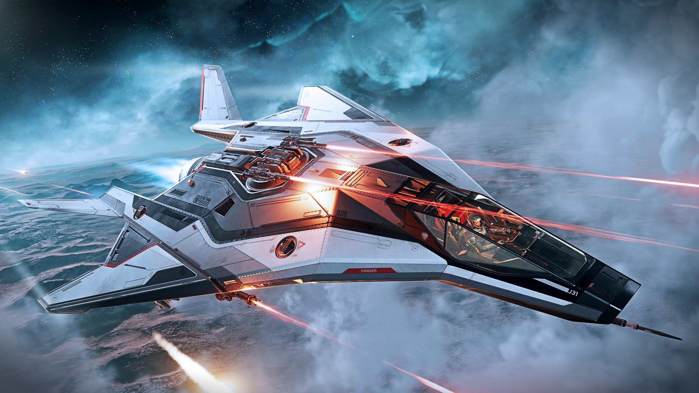
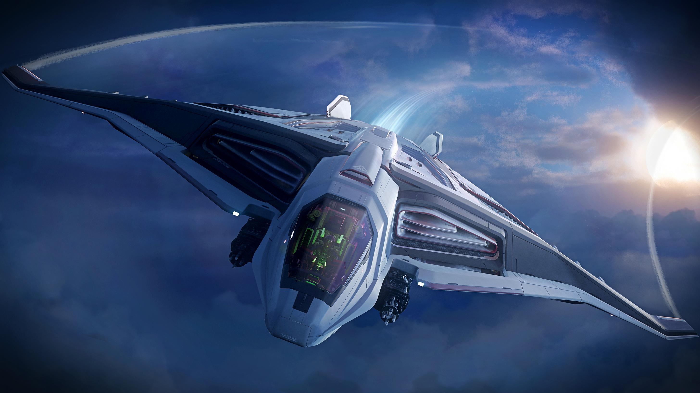
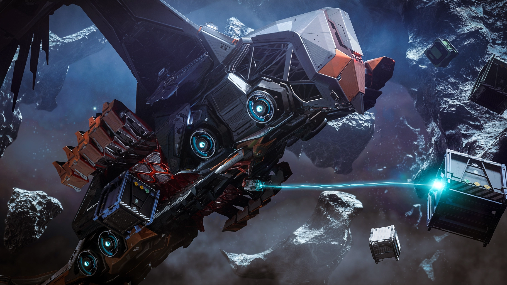
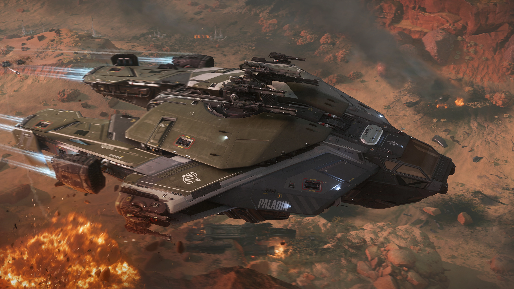

My Star Citizen Fleet
Star Citizen is a Space MMO in development but has an early access apha version that me and my brother play together. Overtime both of us have looked through the ships currently avalible in game and found ones we enjoy for their looks, functionality, and gameplay. I have put together a list of four ships that will make up my main fleet. The great thing about this game is the many different styles and gameplay loops for anyone to enjoy and as the game develops more are added. My fleet mainly focuses on combat because that is what I enjoy most but another person might perfer salvage, mining, or even cargo. Currently I only have one of these ships in game but there was recently an event called IAE (Intergalactic Aerospace Expo) where they released new ships and all current ships could be rented and flown as well as the game being free to try out. So I got to fly each of these and test them to some extent.


The Anvil Aerospace Arrow
This is the cheapest of the ships and the only one I currently own. It is clasified as a light fighter so it is very nimble while being lightly armored and with low firepower. There are a couple of light fighters in the game but the Arrow is my favorate looks wise, altho it is more fragile than the other light fighters due to having only one shield instead of two it is the smallest and most manuverable so it's harder to hit making up for it. It also has lower firepower than the others but can still hold it's own in a fight and for me who mainly does PVE it does not matter and I can run all the missions I want. Another benifit of it that comes from it's smaller size is that is has a lower cross section value meaing if you change out the compontets for stealth ones it can slip in and out of combat very easily. It is my main ship to fly becuse it is so fast and has a low insurace claim time so if it gets distroyed I only have to wait ~5 minutes or ~2 if I expidite it with some in game currency before getting back in the action. It has always been one of my favorite looking ships and once I got to rent and fly it during the event I fell in love with the gameplay of it and spent the in game currency I had been saving up to buy it. The role this ship plays in my fleet is my A to B quick transport and also fighter for bounty hunting missions, and when playing with my brother he usualy runs a larger ship that is less manuverable so I can chase down smaller targets while he handles the bigger ones.

The Aegis Dynamics Sabre Firebird
The Sabre series of ships are medium fighters specialized in stealth. The base Sabre has a couple of misiles and four guns, the Firebird swaps two of the guns for 20 more missiles. This lowers it's ability to fight head to head but that's not the point of a steath ship, even the base Sabre is made for hit and run tactics. With 24 misiles and the ability to fire six at once the firebird is meant to take down larger targets without them knowing until its too late. This is great in situations where there is only one or two targets but strugles when going agaist multiple people unless they are slow and can be out manuvered. It is a specialized ship that does one thing realy well and that's "destroy this guy in particular" which a lot of bountyhunting is. For me this ship will be used to take out larger bounties and if there are multiple enemies it's stealty enough to slip by them to the target. It also gives me another option for team play. It functions more as a support craft in a team fight, it still has enough firepower with it's guns to distract an enemy or help finish off a target. And if there is a larger ship it can take them out so the other people on the team can focus on the smaller ships. I have also always thought that the Sabre series were beautiful ships so that's another reason I want one if not all eventualy. The firebird has a niche use but in that area it is opressive, and it just so happens that it's niche is one I enjoy.

The Esperia Prowler Utility
For my next size up of ship and my ship for more "daily driving" the Prowler Utility is perfect. Like the previous ships I love the look and design of the Prowler, the alien bird of prey design just speaks to me. Onto it's functionality it has the ability to carry a decent amount of cargo but not at the level of a dedicated hauling ship. The tradeoff is you get better firepower and added stealth for the Prowler utility. It has been descibed by some as a heavy fighter with cargo space which seems to be it's role. This makes it perfect for making a little extra profit by scavaging the ships you take out when bounty hunting or gettin rare components from them which is what I would mainly use it for. With it's stealth it is also great for moving cargo that you realy don't want to lose, this could be your own items you are just moving from one place to another or some high value comodity for trade. It can also attach the ATLS mech suits to it's cargo bay and deploy them. The ATLS has mineing and military varients so it could be used to deploy armored troops or mine high value matterials without being noticed. Overall it has many uses both in solo and team play all while looking good and being stealthy.

The Anvil Aerospace Paladin
Last for my fleet I have the Paladin, the Paladin is a heavily armored gunship that can be run with up to four players but is just as if not more effective with two. It has one large turret that can switch between being on the top or bottom of the ship meaining no matter where the target is you can engage it. There are also smaller turrets on each side that can be operated by the last two crew members or if run by two people are pilot controled but can only face forward. During the free fly event my brother and I were able to test out the ship and cordinate between the turret and pilot well. This would be my team centered ship and would very rarely be flown solo because of it's lack of manuverability and the majority of it's firepower being in the main turret that requires a second person. For looks it's also quite charming, it's not as sleak as the arrow or unique as the prowler but it is intimidating and has interesting design aspects like it's deployable armor for the cockpit.